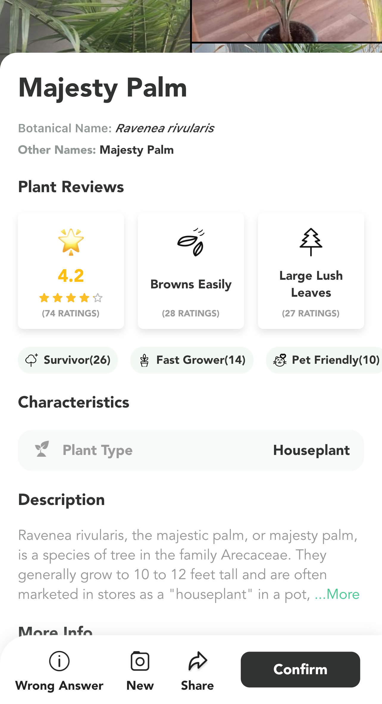
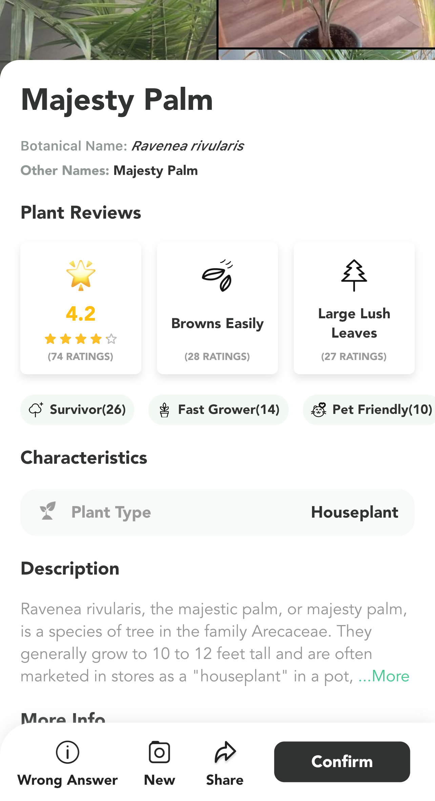
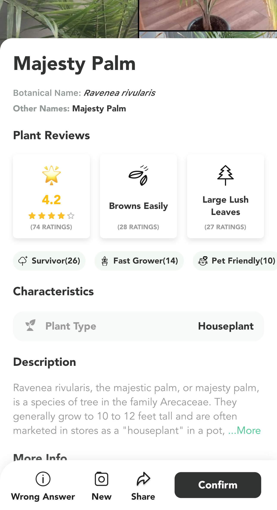

PLANT IDENTIFICATION ++
The app I have chosen for my Case Study is called Plant Identification ++, in this app you can take or upload a photo of any plant. The main purpose is to educate users on plant types by identifying them in detail. The most helpful aspects are gaining knowledge about a plant type, because it was created to solve the problem of people not knowing what they are. This app is powered by artificial intelligence, which provides a database full of thousands of plant types. This app is suited for anyone, from ages 4 and up.
Key Features
- Instantly identify tens of thousands of plants, flowers, trees, leaves
- Powered by advanced artificial intelligence
- A large database of plants
- Great for gardening fans and horticulture specialists
- Super simple interface, easy-to-use for anyone
- Suggest a list of possible plants based on your photo
- Show details about a plant
- Check your identification history at any time
- Share your picture with plant details to your friends

The amount and quality of greenness in the local outdoor environment has repeatedly been linked to human well-being.
The green local environment promoted an active life in two ways. The first was through its potential to motivate the participants into being active. The second was through the possibility to discover various places and environments and to make choices on where to spend time.
Motivation. Participants described that the presence of greenery motivated them to be physically active, especially if these environments were experienced as varied and authentic.
They described being drawn to and actively seeking green areas for activities like walks, bicycling trips and runs. Doing gardening work in their own garden was another inspirational and meaningful leisure time activity mentioned by the participants.